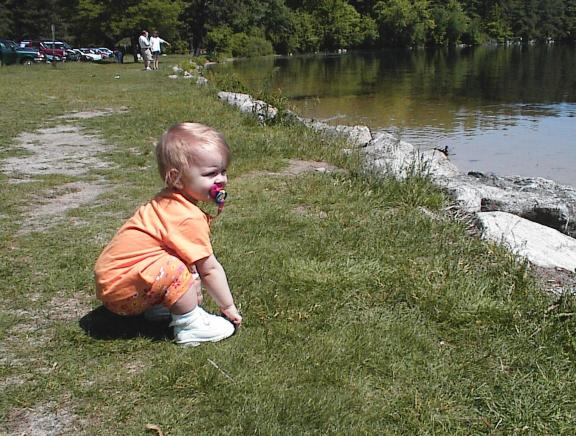
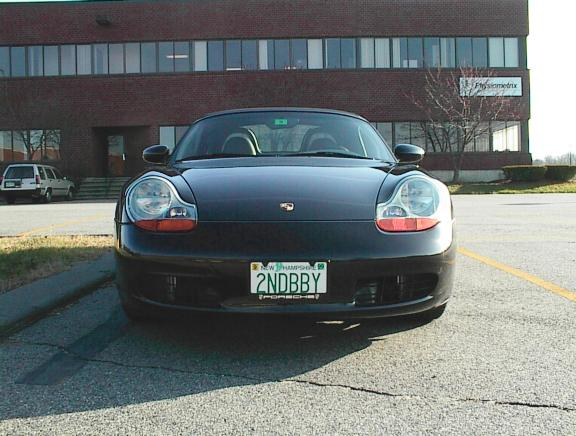
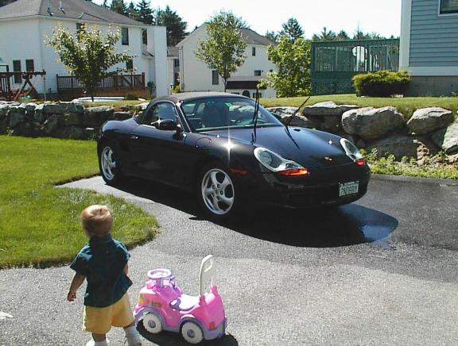
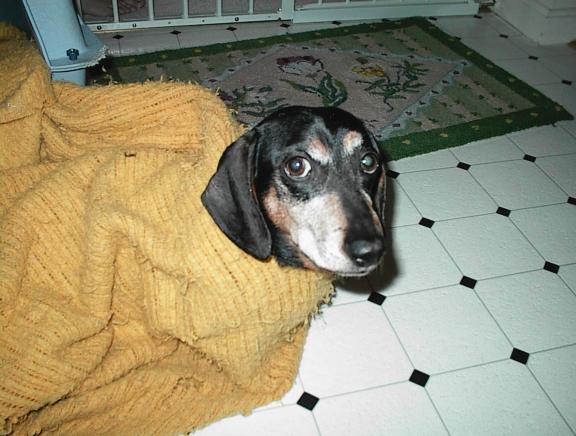
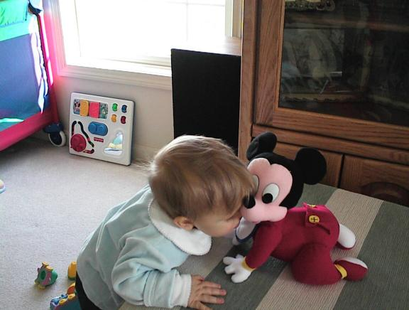
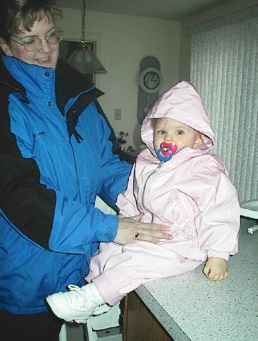
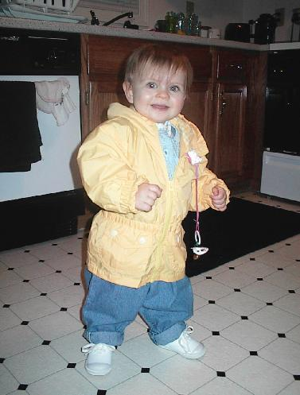

Here's my second baby. We were off to work on a weekend morning to catch up on some work for a company milestone. As you can imagine, both babies keep me busy.

Here's Kathryn and the Porsche basking in the sun after a wash. The wipers are up just so I can clean the lower part of the windshield.

Here's another "kid" -- this is our Dachsund Rudy. We call him RooRoo, Booboo, poopHead (he earned this one because of the messes he leaves outside), or whatever. Rudy likes to bury himself in a blanket and poke his head out. It's rather cute and Rudy is quite intelligent (as most Dachsunds are).

This picture is adorable! Kathryn is giving her Mickey Mouse a kiss. One of the early things she's learned to understand is "give Mickey kiss!". This was taken March 27, 1999.

Here's my wife Jule' after having gotten Kathryn dresses for going out. This was taken April 26, 1999 -- a little over a week after I mailed my taxes -- whew!

Here's Kathryn standing by herself. She only started walking a week or so after her birthday.
